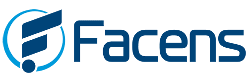

Projeto Rotas Inclusivas
Facilitando o acesso a passagens com desconto para idosos e PCDs
Sobre o Projeto
O Rotas Inclusivas é um projeto desenvolvido durante o semestre 2024/1 por alunos do curso de Análise e Desenvolvimento de Sistemas da FACENS.
Disciplina UPX
Este projeto foi desenvolvido para a disciplina de Projeto Integrador (UPX), onde aplicamos na prática os conhecimentos adquiridos durante o curso, integrando diversas áreas do desenvolvimento de sistemas.
Objetivo Principal
Facilitar que idosos e pessoas com deficiência (PCDs) encontrem e adquiram passagens de ônibus com os descontos que são garantidos por lei, de forma simples e acessível.
Nossa plataforma centraliza informações sobre os direitos desses grupos e os descontos disponíveis em cada rota, simplificando o processo de compra.
Alinhado com a ODS 11.3

Nosso projeto está alinhado com o Objetivo de Desenvolvimento Sustentável 11.3 da ONU, que busca:
"Até 2030, aumentar a urbanização inclusiva e sustentável, e as capacidades para o planejamento e gestão de assentamentos humanos participativos, integrados e sustentáveis."
Ao facilitar o acesso ao transporte público para grupos vulneráveis, contribuímos para cidades mais inclusivas e acessíveis, promovendo a mobilidade urbana sustentável.
Como Funciona
Busca Facilitada
Filtros especiais para encontrar passagens que oferecem os descontos previstos em lei para idosos e PCDs, com opções de acessibilidade.
Descontos Garantidos
Informação clara sobre os direitos e descontos disponíveis em cada rota e empresa, conforme a legislação brasileira.
Acessibilidade
Interface adaptada para diferentes necessidades, com recursos de alto contraste, leitor de tela e navegação simplificada.
Amparo Legal
Nosso projeto se baseia nas seguintes legislações brasileiras que garantem direitos no transporte:
Lei 10.741/2003 (Estatuto do Idoso)
Garante 50% de desconto no transporte interestadual para maiores de 60 anos, com pelo menos duas vagas por veículo.
Lei 13.146/2015 (Estatuto da Pessoa com Deficiência)
Assegura desconto mínimo de 50% para PCDs no transporte interestadual, além de prioridade no embarque.
Decreto 5.296/2004
Regulamenta a acessibilidade nos sistemas de transporte, incluindo adaptações nos veículos e terminais.
Nossa Equipe
Julia Pozza
Desenvolvedora Front-end e Back-end
Responsável pelo design e experiência do usuário
Cinthia Silverio
Responsável pela integração com sistemas de transporte e banco de dados
Caio Oliveira
Responsável pela documentação e desenvolvimento de diagramas
Sobre a FACENS
A Faculdade de Engenharia de Sorocaba (FACENS) é uma instituição de ensino superior reconhecida por sua excelência acadêmica e projetos inovadores.
O curso de Análise e Desenvolvimento de Sistemas prepara profissionais para atuar no desenvolvimento de sistemas computacionais, com foco em soluções tecnológicas inovadoras e de qualidade.
O projeto UPX é uma iniciativa da FACENS que incentiva os alunos a desenvolverem projetos reais com impacto na sociedade, aplicando os conhecimentos adquiridos durante o curso.
Visite o site da FACENSTecnologias Utilizadas

HTML5

CSS3

JavaScript
.jpg)
Bootstrap

Git